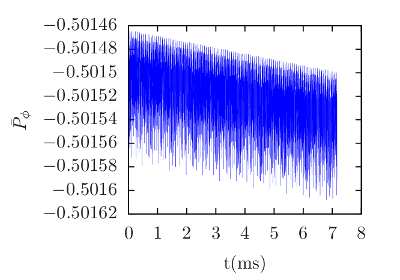
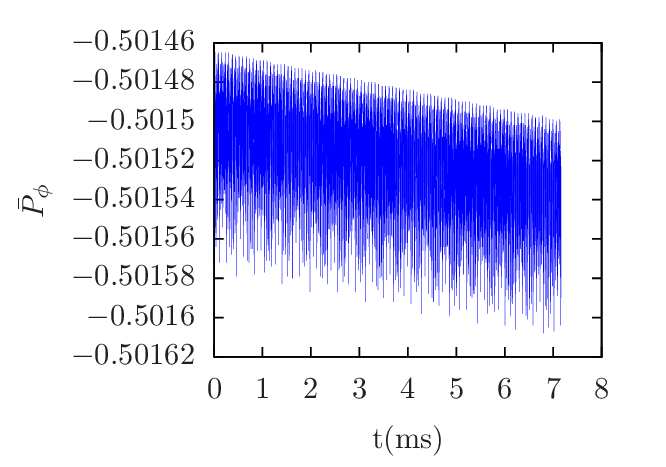

There are three constants of motion for the guiding center motion, namely, the canonical toroidal angular momentum Pϕ, the magnetic moment μ, and the total kinetic energey 𝜀. Examining how well the kinetic energy 𜀠and the toroidal angular momentum Pϕare conserved provides a way to evaluate the accuracy of the numerical code. The kinetic energy 𜀠and toroidal angular momentum Pϕ are deï¬ned by
|
| (76) |
|
| (77) |
Deï¬ne 𝜀n = mvn2 and Pϕn = ZeBnLn2, then the normalized forms of 𜀠and Pϕ are written as
 | (78) |

 
